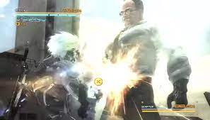
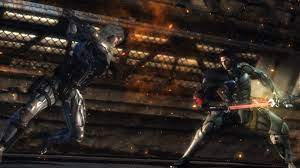
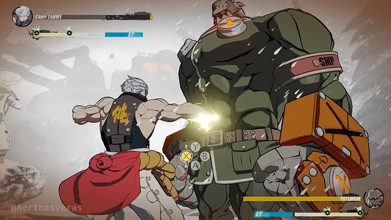

MGRR es un juego del genero Hack'n'Slash desarollado por Capcom que cambio el personaje principal humano infiltrandose por la base del enemigo con un cyborg llamado Raiden que peleaba contra otros de su tipo para prevenir una guerra mundial. A medida que avanza el juego iras a diferentes localizaciones del mundo peleando contra soldados rasos, robots y jefes cada uno con su propia historia y con algo que hace que el juego siga siendo relevante hasta hoy: Temas musicales que reflejan las ideas e historias de los personajes que son alucinantes.
 El 22 de julio de 2021 el usuario de Twitter Pikabu el GIF con el subtitulo de "Cuando peleas con tu hermano mayor" y poco despues recibio montones de variaciones con diferentes personajes animados por encima
